Sculpture
After Frederic Remington 'Coming Through the Rye' Bronze Group
After Frederic Remington (American, 1861-1909); cast signature on base (recast, not an original) · 20th century
Price Upon Request

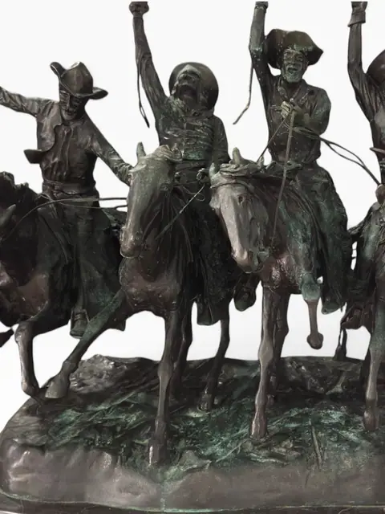
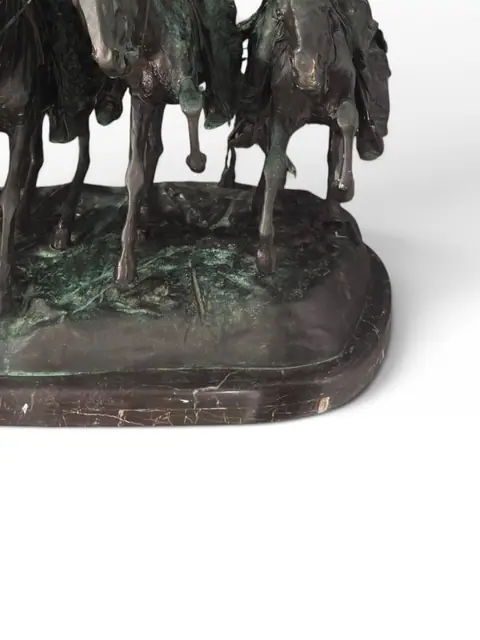
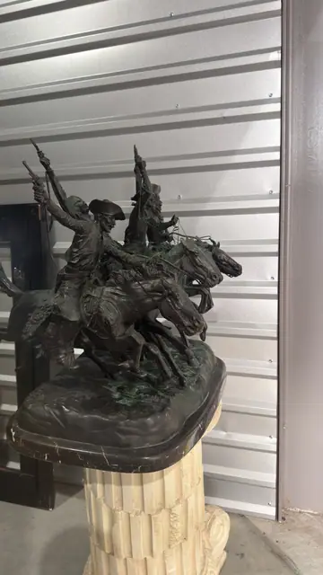
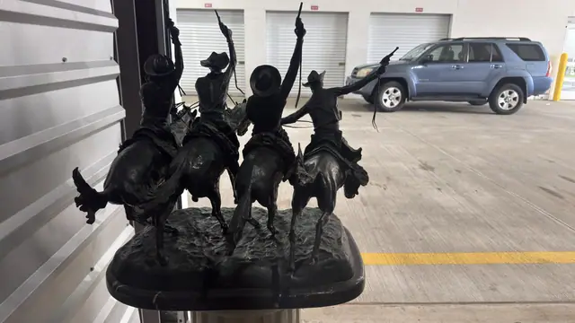
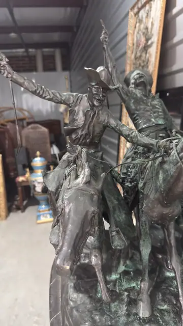
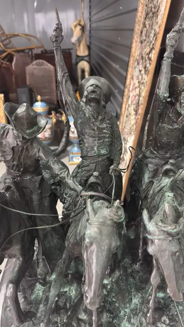
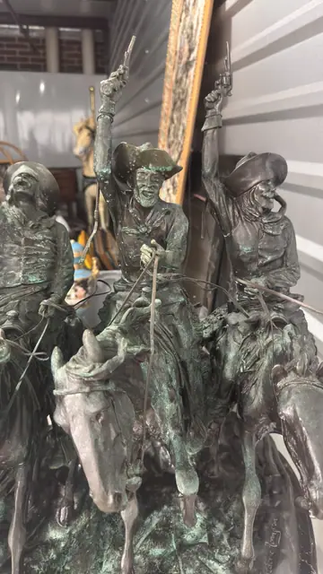
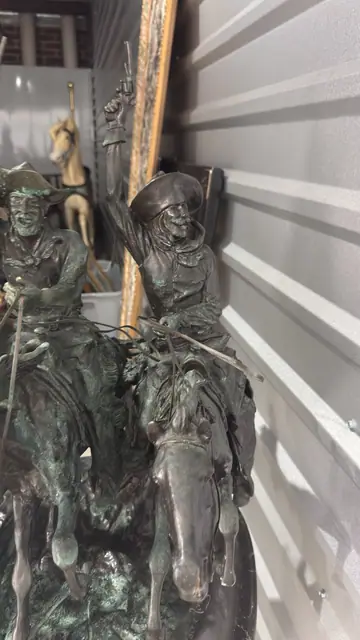
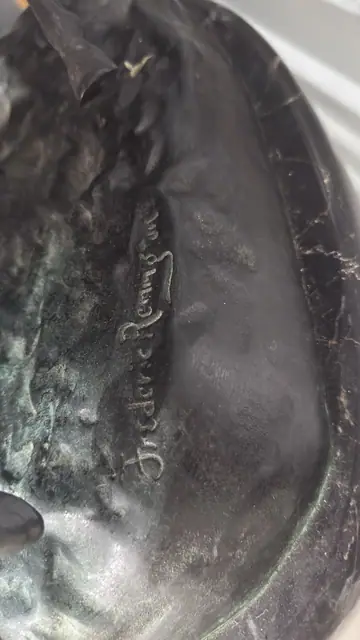
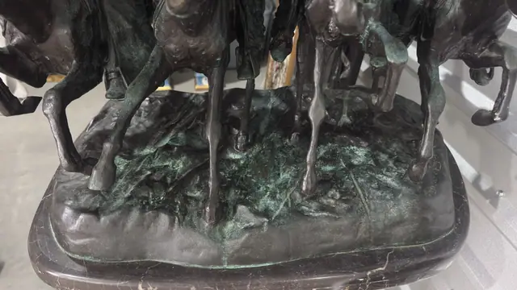
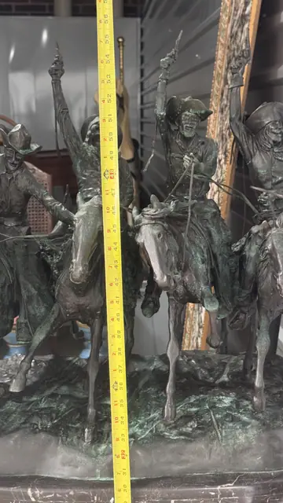
About the Item
A large patinated bronze equestrian group after Frederic Remington's 1902 'Coming Through the Rye,' depicting four cowboys on galloping horses with revolvers raised in celebration. Cast with a dark brown patina heightened with verdigris accents and mounted on a black marble plinth; the base bears the cast signature 'Frederic Remington.' A dramatic late-20th-century recast of one of the most iconic Western sculptures. Subject identified via auction records (Bidsquare/Leonard/Fontaine's) for 'Coming Through the Rye' recasts. NOT an original Remington; describe as 'after Remington' only.
Details
- Creator:
- After Frederic Remington (American, 1861-1909); cast signature on base (recast, not an original)
- Creation Year:
- 20th century
- Medium:
- Patinated bronze on black marble base
- Period:
- 20Th
- Condition:
- Offered in the condition shown in the photographs.
- Reference Number:
- VO-362